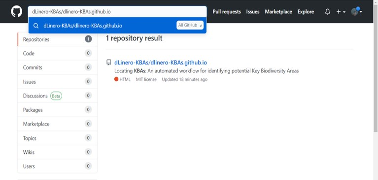
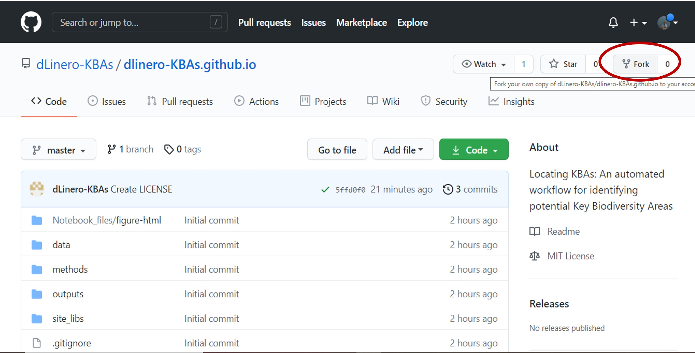
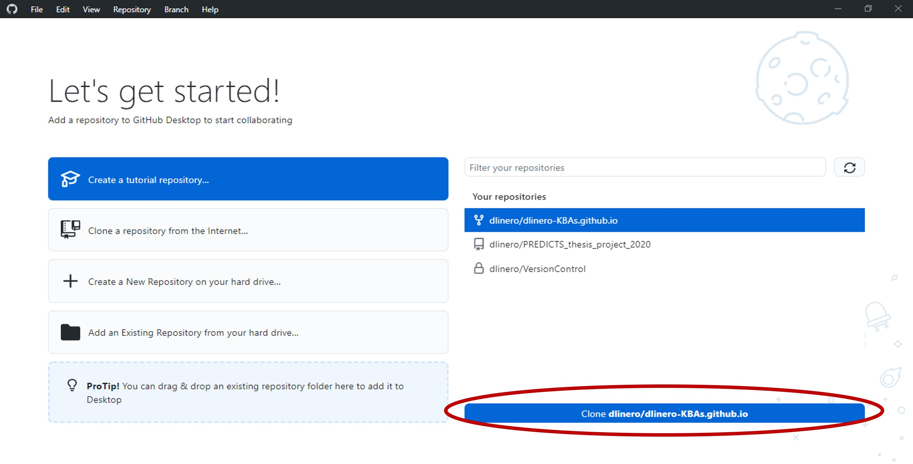
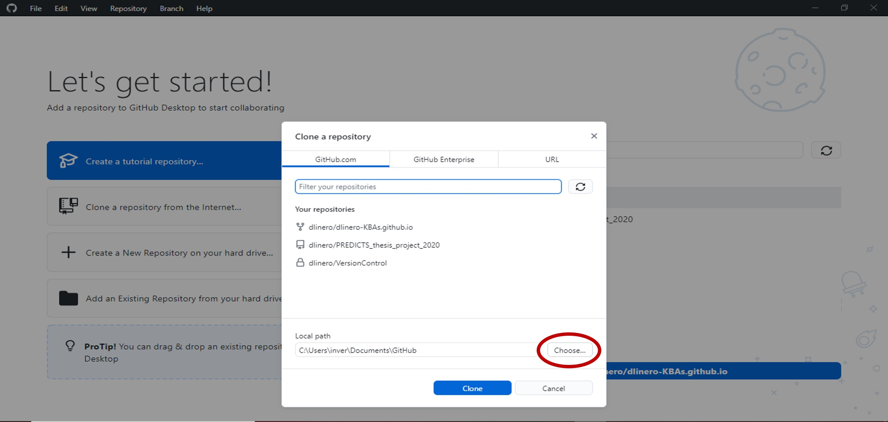
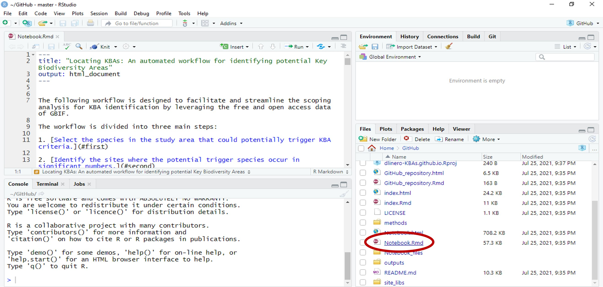

Locating KBAs: An automated workflow for identifying potential Key Biodiversity Areas
Daniela Linero - National Audubon Society
Introduction
In the face of an alarming and accelerating loss of biodiversity, it is essential to safeguard the places that contribute significantly to the persistence of species around the world. The IUCN Species Survival and World Protected Areas Commissions recently led an effort to develop a standard for identifying the places with the highest conservation value, the Key Biodiversity Areas (KBAs; IUCN, 2016). In the process of identifying KBAs, it is recommended to first conduct a comprehensive scoping analysis. However, this analysis requires a great effort to obtain, compile and analyze spatial data for as many taxonomic groups as possible. The Locating KBAs workflow helps to streamline the scoping analysis by using the R programming language and leveraging GBIF data. The workflow code accesses the occurrence data of species present in a user-defined area and determines all those that could trigger the criteria of the KBA standard. Subsequently, it helps users identifying the places where the potential trigger species occur in significant numbers. In this way, the workflow enables users to efficiently and transparently identify the sites where it is most appropriate to focus efforts on gathering information on mature individuals, engaging stakeholders, and applying the standard’s criteria.
On this website you can find an overview of the workflow and the requirements and steps necessary to run the code. Click on the Notebook tab to see the workflow code and interact with the main results such as tables and maps. Click on the GitHub repository tab to be redirected to the repository where the code is stored. You can clone the code on your computer and modify and run it locally (see section How to run the workflow code in your local computer).
Methodology
1. Installation and initial requirements
To get started, you need to confirm that you have the following requirements:
Have R and RStudio installed on your computer. If you do not have them, please download and install R first and continue downloading and installing RStudio.
Have a GitHub account and GitHub Desktop installed on your computer. You can create a free GitHub account here and download GitHub Desktop here.
Have a GBIF account. If you do not have one yet, create it using this link.
Request an API Key here to access the IUCN Red List information.
Once you have met all the above requirements, open RStudio and make sure you have the following packages installed; otherwise use the following code to install them:
2. Workflow
The workflow code presented in the notebook tab, accessible through the GitHub repository, is designed to facilitate and streamline the scoping analysis for KBAs identification by leveraging the free and open access data of GBIF. Before exploring and running the workflow code, I encourage users to familiarize themselves with the Global Standard for the Identification of Key Biodiversity Areas (IUCN, 2016) and the Guidelines for using this standard (KBA Standards and Appeals Committee, 2020).
In this workflow we will focus solely on the following species-based criteria:
- A1 for globally threatened species
- B for restricted-range species
- D1 for congregations of species during a particular stage of their life cycle
The workflow is divided into three main steps. First, the user downloads and cleans GBIF occurrence data. The code then retrieves information for each species present in the dataset, accessing the IUCN Red List and Bird Data Zone portals and the tools provided in the following KBA webpage. With this information, the code selects the species present in the study area that have the potential to trigger the aforementioned KBA criteria. The second step is to apply two functions that allow the user to map the location of the potential trigger species and identify the sites where they occur in significant numbers. In the case of bird species, it is also possible to locate the places where they meet the thresholds of the KBA criteria considered. The last step of the workflow is to obtain the citations of the different sources of information consulted in the previous steps.
The scheme below represents the overall workflow

Fig 1. Scheme representing the main steps of the Locating KBAs workflow
3. Detailed step-by-step instructions
In the Notebook tab you will find the explanation of all the steps to complete the workflow and their associated code. Additionally, you will be able to interact with the most important results of the workflow, such as the table of potential trigger species and the maps of the sites where they occur in significant numbers.
Example outputs
The following is a preview of the table to identify potential trigger species for the above criteria (globally threatened species, restricted range species, species that form seasonal congregations). For bird species, it is also possible to obtain the global number of mature individuals and calculate the criteria thresholds,

The code also contains a function that will help the user to identify the sites where the potential trigger species have large counts or where there are multiple records of potential trigger species.

A second function, available only for bird species, creates an interactive map showing the location of records that meet the threshold of individuals for each criterion evaluated.

How to run the workflow code in your local computer
Sign in into your GitHub account here.
To copy the repository to your profile, go to the search tab at the top of the screen and type dLinero-KBAs/dlinero-KBAs.github.io

Click on the repository
Click the fork button in the right corner.

If you want to open or modify the files and run the code in your local computer, open the GitHub Desktop software.
If this is your first time opening the software, it will ask you to sign into your GitHub account. Once done, select the Locating KBAs repository and click the clone button at the bottom.

- In the pop-up window, select GitHub.com and set the folder where you want to save all the files that are in the repository.

Select clone
After the GitHub desktop finishes cloning the files to your local computer, select show in explorer to open the folder where the files were saved.

- Open the dlinero-KBAs.github.io RStudio project. In the lower right corner, select Notebook.Rmd to open the Rmarkdown file.

- Now you are ready to modify the code and run it!
Citation
Linero D (2018) Locating KBAs: An automated workflow for identifying potential Key Biodiversity Areas. https://github.com/dLinero-KBAs/dlinero-KBAs.github.io
References
Gueta, T., Carmel, Y. (2016). Quantifying the value of user-level data cleaning for big data: A case study using mammal distribution models. Ecological Informatics, 34, 139-145. https://doi.org/10.1016/j.ecoinf.2016.06.001
IUCN (2016). A Global Standard for the Identification of Key Biodiversity Areas, Version 1.0. First edition. Gland, Switzerland: IUCN.
KBA Standards and Appeals Committee (2020). Guidelines for using A Global Standard for the Identification of Key Biodiversity Areas. Version 1.1. Prepared by the KBA Standards and Appeals Committee of the IUCN Species Survival Commission and IUCN World Commission on Protected Areas. Gland, Switzerland: IUCN. viii + 206 pp.